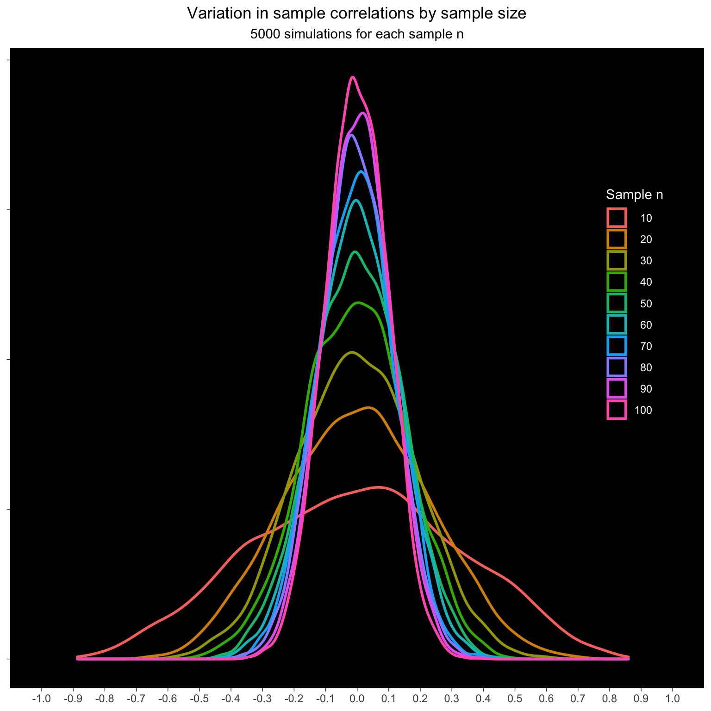
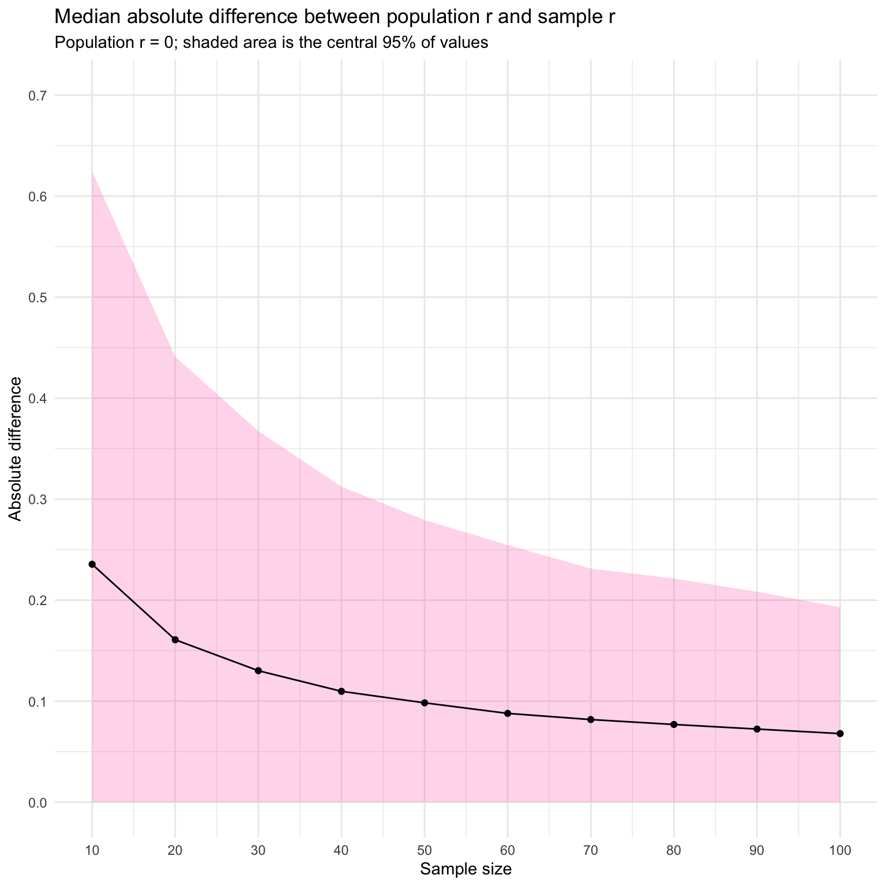
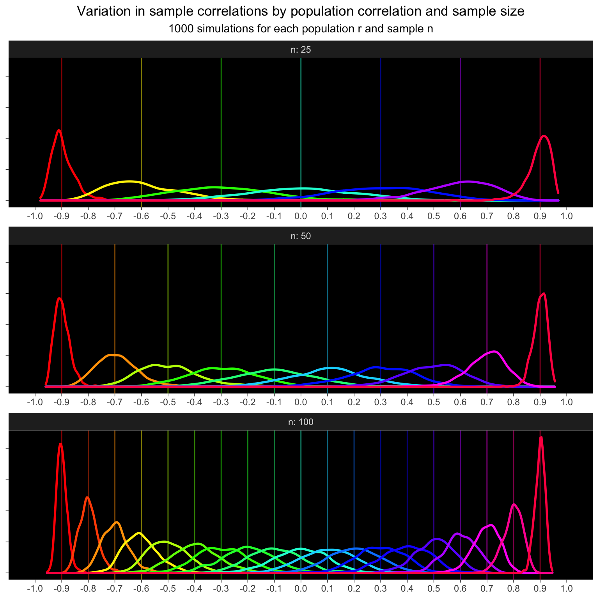

25 Trend
The final general category is “uncertainties” and today’s theme is “trend”, so I thought I’d use faux to simulate some trends (correlated data) and visualise how the uncertainty in the sample correlation changes with the population correlation and the sample size. This tutorial builds in complexity from simulating a single sample to simulating 1000s of samples for each combination of a range of population correlations and sample sizes.
25.2 Simulate repeatedly
Simulate 5000 sets of 100 pairs with a population correlation of r = 0.25 and return the observed sample correlation.
Plot
p <- ggplot() +
geom_density(aes(x = r25))
# shade central 95%
q <- quantile(r25, probs = c(.025, .975))
d <- ggplot_build(p)$data[[1]]
d_mid <- filter(d, x >= q[[1]], x <= q[[2]] )
p +
geom_area(data = d_mid, aes(x, y),
fill = "hotpink", alpha = 0.5) +
geom_vline(xintercept = 0.25, size = 1.5) +
labs(x = "Sample Correlation", y = NULL,
title = "Variation in sample correlations (central 95% shaded)")25.3 Population correlation
Simulate 100 pairs from populations with correlations ranging from -0.9 to +0.9. Do this 1000 times for each population r and calculate the sample correlation for each simulation.
The variation in sample correlations increases as the correaltions get smaller.
Plot
ggplot(dat_rep_r, aes(x = sample_r, color = as.factor(pop_r))) +
geom_vline(aes(xintercept = pop_r,
color = as.factor(pop_r)),
show.legend = FALSE, alpha = 0.5) +
geom_density(show.legend = FALSE, size = 1) +
scale_x_continuous(breaks = seq(-1, 1, .1)) +
scale_color_manual(values = rainbow(19)) +
coord_cartesian(xlim = c(-1, 1)) +
labs(x = NULL, y = NULL,
title = "Variation in sample correlations by population correlation",
subtitle = "1000 simulations for each population r") +
theme_dark() +
theme(axis.text.y = element_blank(),
panel.grid = element_blank(),
plot.title = element_text(hjust = 0.5),
plot.subtitle = element_text(hjust = 0.5),
panel.background = element_rect(fill = "black")
)25.4 Sample size
How does the sample size affect the sample correlations? Simulate samples from 10 to 100 pairs with a population correlation of 0. Do this 5000 times for each n and calculate the sample correlation.
The variation decreases with increasing n.
Plot
ggplot(dat_rep_n, aes(x = sample_r, color = as.factor(n))) +
geom_density(size = 1) +
scale_x_continuous(breaks = seq(-1, 1, .1)) +
coord_cartesian(xlim = c(-1, 1)) +
labs(x = NULL, y = NULL,
color = "Sample n",
title = "Variation in sample correlations by sample size",
subtitle = "5000 simulations for each sample n") +
theme_dark() +
theme(axis.text.y = element_blank(),
panel.grid = element_blank(),
plot.title = element_text(hjust = 0.5),
plot.subtitle = element_text(hjust = 0.5),
panel.background = element_rect(fill = "black"),
legend.position = c(.9, .6),
legend.background = element_blank(),
legend.title = element_text(color = "white"),
legend.text = element_text(color = "white", hjust = 1),
legend.key = element_rect(fill = "black")
)
You can also visualise this as the absolute difference between population r and sample r. As sample size increases, the median error decreases.
Plot
dat_rep_n %>%
mutate(abs_diff = abs(sample_r - pop_r)) %>%
group_by(n) %>%
summarise(q_50 = quantile(abs_diff, .50),
q_95 = quantile(abs_diff, .95),
.groups = "drop") %>%
ggplot(aes(x = n, y = q_50)) +
geom_ribbon(aes(ymin = 0, ymax = q_95),
fill = "hotpink", alpha = 0.25) +
geom_line() +
geom_point() +
labs(x = "Sample size",
y = "Absolute difference",
title = "Median absolute difference between population r and sample r",
subtitle = "Population r = 0; shaded area is the central 95% of values") +
scale_x_continuous(breaks = seq(10, 100, 10)) +
scale_y_continuous(breaks = seq(0, .7, .1)) +
coord_cartesian(xlim = c(10, 100), ylim = c(0, .7))
25.5 Mean absolute difference
How does the average difference between the sample correlation and population correlation change with population r and sample n?
Data simulation
set.seed(8675309)
dat_diff <- crossing(
n = c(25, 50, 100),
pop_r = seq(-.9, .9, .1),
rep = 1:1000
) %>%
rowwise() %>%
mutate(sample_r = rnorm_multi(n = n, r = pop_r, vars = 2) %>%
cor() %>% `[[`(1, 2)) %>%
mutate(abs_diff = abs(sample_r - pop_r)) %>%
group_by(pop_r, n) %>%
summarise(q_50 = quantile(abs_diff, .5),
q_95 = quantile(abs_diff, .95),
.groups = "drop")Plot
ggplot(dat_diff, aes(x = pop_r, y = q_50,
fill = as.factor(n),
color = as.factor(n))) +
facet_wrap(~n, nrow = 1, labeller = "label_both") +
geom_line(size = 2, show.legend = FALSE) +
geom_ribbon(aes(ymin = 0, ymax = q_95),
alpha = 0.2,
show.legend = FALSE) +
scale_x_continuous(breaks = seq(-1, 1, .5)) +
coord_cartesian(xlim = c(-1, 1), ylim = c(0, .5)) +
labs(x = "Population Correlation",
y = "Absolute difference",
color = "Sample n",
title = "Median absolute difference between sample r and population r",
subtitle = "500 simulations for each population r and sample n\nShaded area is the central 95% of values") +
theme_dark() +
theme(panel.grid = element_blank(),
plot.title = element_text(hjust = 0.5),
plot.subtitle = element_text(hjust = 0.5),
panel.background = element_rect(fill = "black"),
legend.background = element_blank(),
legend.title = element_text(color = "white"),
legend.text = element_text(color = "white", hjust = 1),
legend.key = element_rect(fill = "black")
)25.6 Simulate across values of both
The spread of sample correlations gets a lot bigger as sample n decreases, so I’ll simulate every 0.3 for n = 255, every 0.2 for n = 50, and every 0.1 for n = 100. I have to round the results of seq() because these values don’t exactly match up due to floating point error.
Code
set.seed(8675309)
n25 <- crossing(n = 25, pop_r = seq(-.9, .9, .3))
n50 <- crossing(n = 50, pop_r = seq(-.9, .9, .2))
n100 <- crossing(n = 100, pop_r = seq(-.9, .9, .1))
dat_rep_rn <- bind_rows(n25, n50, n100) %>%
crossing(rep = 1:1000) %>%
mutate(pop_r = round(pop_r, 1)) %>%
rowwise() %>%
mutate(sample_r = rnorm_multi(n = n, r = pop_r, vars = 2) %>%
cor() %>% `[[`(1, 2))Plot
ggplot(dat_rep_rn, aes(x = sample_r, color = as.factor(pop_r))) +
facet_wrap(~n, ncol = 1, labeller = "label_both", scales = "free_x") +
geom_vline(aes(xintercept = pop_r,
color = as.factor(pop_r)),
show.legend = FALSE, alpha = 0.5) +
geom_density(show.legend = FALSE, size = 1) +
scale_x_continuous(breaks = seq(-1, 1, .1)) +
scale_color_manual(values = rainbow(19)) +
coord_cartesian(xlim = c(-1, 1)) +
labs(x = NULL, y = NULL,
title = "Variation in sample correlations by population correlation and sample size",
subtitle = "1000 simulations for each population r and sample n") +
theme_dark() +
theme(axis.text.y = element_blank(),
panel.grid = element_blank(),
plot.title = element_text(hjust = 0.5),
plot.subtitle = element_text(hjust = 0.5),
panel.background = element_rect(fill = "black")
)